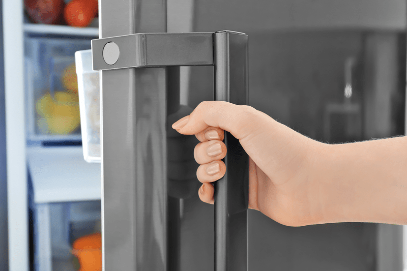
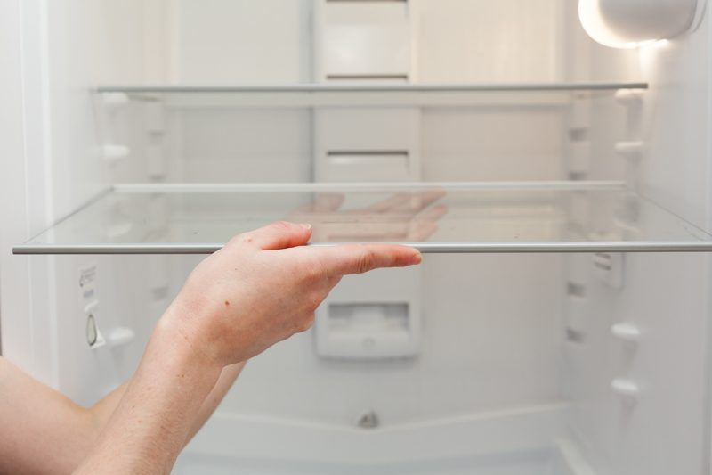
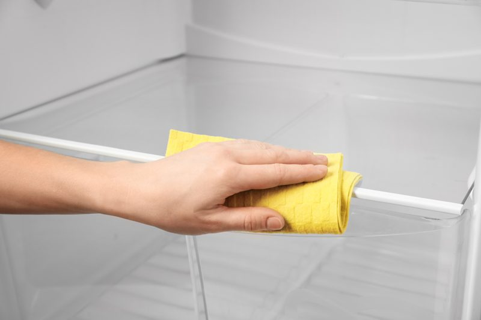
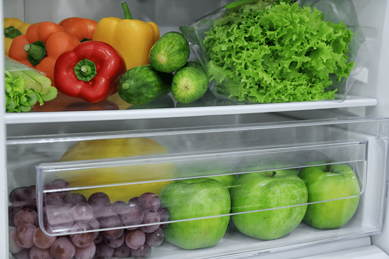
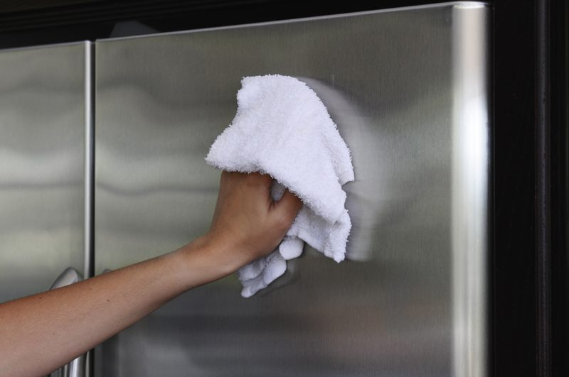

#3 – Cleaning the Fridge and Freezer
It’s not just a fridge… it is your FARMacy for better health!
The fridge is the hub of your kitchen, and the doors of the fridge are most likely the most used doors in the house. We depend on it to safely store all of our perishable foods until we’re ready to use them. Unfortunately, the refrigerator takes a lot of abuse. We stuff it full. We forget about leftovers. We leave spills until they’ve crystallized. Then we complain when there’s even the slightest unpleasant odor. (throws hands in the air)

By keeping the fridge clean and organized (regularly) we save time in looking for things as well as saving money by making sure our nutrient-packed foods are enjoyed at the peak of freshness. So here we go, we need to get started. For those of you who always ask about saving time in the kitchen, this post is going to help you achieve that! Well, that’s my hope. First off, clear the kitchen counters, so you have space to work. Fill the sink cavity with warm soapy water, turn on some good tunes, and let’s get started!
Remove all the Food
- Get rid of any food that is expired, leftover, or filled with unhealthy preservatives, additives, sugars, and chemicals.
- Now is a good time to ditch heavily processed foods that are filled with nonsense ingredients.
- As you remove condiments (dressings, ketchup, mustard, etc.) place them near the sink. You will want to wash all the bottles (crusty lids and all) before returning them to the fridge.
Remove Shelves and Drawers
- Take out all removable drawers and shelves and set them aside.
- Drawers and shelves that are made of metal or plastic can be washed with hot water and dish soap right away, but glass and ceramic pieces need to gradually warm up to room temperature before being washed with hot water to prevent cracking and breaking.
- Use an old toothbrush to get into tight places when cleaning.

Wipe Down Refrigerator Interior
- Use a clean cloth with hot water and a mild detergent like dish soap.
- I use Thieves (by Young Living) and micro cloths for all my cleaning.
- Work from top to bottom to prevent dripping on surfaces that are already clean.
- For those tough stuck-on spills, use a non-abrasive scrubber.
- Be sure to keep rinsing your cleaning cloth throughout the process to ensure cleanliness.
- Pay special attention to the bottom crevices and back of the refrigerator where spills tend to migrate. I use an old toothbrush for this task.
- Use a clean, dry cloth and wipe everything down to make sure it is completely dry.

Clean Shelves and Drawers
- Now that your shelves and drawers have had time to warm up gradually take a few moments to clean and dry them thoroughly.
- Be careful, especially when handling slippery glass shelving, I like to wear dishwashing gloves to prevent slippage.
First off, grab a chilled drink of choice and wet that whistle. You have been working hard! I want you to stand back and admire that thing of beauty! Let’s reframe how we think of our fridge. It’s a vessel which functions and looks its best when cleaned and filled with nutritious foods. Just like our bodies are a vessel which functions and looks its best when filled with nutritious foods!
Now, before we move on to the next step, I want you to take a picture of your fridge. Go ahead and post it to our
private Facebook group. Let your accomplishment become infectious! Be sure to provide a link back to this posting so others can join in.
The Last Leg of Business

Replace the Food
- Return the food to the refrigerator.
- Use the proper storing methods and containers to ensure the freshness of your foods.
- Be sure to wipe off any jars or containers of food that may need it, like a sticky jelly jar or a crusty salad dressing lid.
- Take care to use clean cloths when working with your food jars and dry them thoroughly as well.
Cleaning the Freezer
- You are going to use the same methods listed above on how to approach the freezer.
- The great thing about freezers is that they rarely have spills or need to be scrubbed out as often.
- Depending on the age of the fridge/freezer, you may need to defrost it. Refer to the manufacturer’s manual on how to tackle yours.
- After the freezer is empty and everything is cleaned, start putting the food back, making sure to check for anything expired. Also, watch for foods that have been exposed to freezer burn, these items should be tossed.
- Close the door; you are just about done. Now give the outside of the fridge a good wipe down and don’t forget to clean the rubber gasket seal around the edges of the door using dish soap and warm water. Dirt and grime can collect there and cause the seal to crack.

Moving Forward
You did it! I am so happy and proud of you. You must feel the same way. Admire that thing of beauty that you just created. Take a quick moment to experience what you are feeling deep down inside. Do you feel more relaxed? Happy? Less stressed or anxious? If you are experiencing these things, you must be wondering how to maintain this feeling.
Set a schedule for keeping the fridge clean and organized. Just because you did it once, doesn’t mean that you won’t have to do it again. But, from this day forward, you are going to create new habits that lead towards a healthier lifestyle. How often you do a light or deep cleaning will depend on your lifestyle, family, usage, etc.
As a rule of thumb, I use my sanitation worker as my reminder to clean the fridge. I know, that sounds odd. But hey, it works for me. When I go through the house gathering up trash for the weekly pick up, I do a clean sweep through the fridge to see if there is anything that needs to be tossed. Composting would be better, but that may not be feasible for all. I usually don’t have much to toss because I am good about using up the foods we have, but sometimes things get pushed too far back to be noticed.
As I go through the fridge, I quickly wipe the shelves with a damp cloth, whether they need it or not. When you do quick cleanups like that, you won’t have to face a HUGE chore in scrubbing the fridge when a deep clean is in need. Also, adding a box of baking soda can work wonders for eliminating odors in the refrigerator and freezer.
As silly as this post may be, I hope you walked away with some inspiration to get that fridge cleaned and filled back up with healthy nutritious foods! Blessings, amie sue
© AmieSue.com